Version 2.116 · Oktober 2026
Die Verwaltungs-App ist das digitale Heft, in dem Sie die Objekte (Mehrfamilienhäuser, Häuser, ehemalige Cafés…), die Wohnungen und Zimmer, die Mieter, die Mieten, die Instandhaltung, das Team und die Buchhaltung festhalten. Es funktioniert auf dem Handy und am Computer. Mieter und Team haben ihre eigene App, die mit der Verwaltungs-App verbunden ist.
Alles, was Sie eintragen, liegt in einem Tresor: Nur wer den Schlüssel kennt, kann ihn öffnen. Nicht einmal die Entwickler der App können Ihre Daten lesen.
In diesem Handbuch stehen die Schaltflächen fett gedruckt, genau so, wie Sie sie mit der App auf Deutsch auf dem Bildschirm sehen (die Sprache ändern Sie in den Einstellungen, Kapitel 1).
Adresse der App
ihre-domain/locataires.html
Wer ist wer
Vermieter = der Eigentümer des Gebäudes, dem Sie die Miete des Hauptmietvertrags («Hauptmietvertrag») zahlen.
Hauptmieter = Sie, Ihre Firma
Untermieter = jeder Mieter, der in Ihren Wohnungen oder Zimmern wohnt.
Zum Abmelden tippen Sie oben rechts auf das Schloss (am Computer auch Sperren, unten links). Wenn Sie eine Weile nichts berühren, schließt sich die App von selbst (die Zeit wählen Sie in den Einstellungen).
Die App kann nur auf einem Handy oder Computer gleichzeitig geöffnet sein. Öffnen Sie sie auf einem zweiten Gerät, erscheint «Die App ist auf einem anderen Gerät geöffnet»:
Übernehmen → Sie kommen hinein, das andere Gerät schließt sich sofort.
Abbrechen → Sie kommen nicht hinein, das andere bleibt offen.
Tipp: Tippen Sie auf das Schloss, bevor Sie das Gerät wechseln.
Achtung!
Ohne Schlüssel und ohne Notfallschlüssel kann niemand den Tresor wieder öffnen. Bewahren Sie beide an einem sicheren Ort auf.
Die App spricht 6 Sprachen: Français, Italiano, Deutsch, Português, English, Español. So ändern Sie sie: Einstellungen → ganz unten Sprache → Sprache antippen.
Die App startet neu und fragt erneut nach dem Schlüssel: Das ist normal (aus Sicherheitsgründen). Quittungen, Belege und Mahnungen an die Mieter bleiben auf Französisch (offizielle Dokumente). Namen, Adressen und Notizen, die Sie selbst schreiben, werden nicht übersetzt.
Die Versionsnummer steht in Einstellungen ganz unten (z. B. «v2.58.0»). Bei einer Neuerung die App neu laden: am Computer Cmd + Umschalt + R (Mac) bzw. Strg + Umschalt + R (Windows); am Handy die App schließen und wieder öffnen (notfalls zweimal). Beim Öffnen startet die App immer auf der Start.
Wichtig: Die App sendet die Daten an die Apps der Mieter und des Teams. Läuft noch eine alte Version, sehen sie die Neuerungen nicht. Ganz unten in der App jedes Mieters steht «v…»: die Version, die ihm die Daten geschickt hat.
Auf dem Handy ist das Menü unten, am Computer links.
| Menüpunkt | Was Sie dort finden |
|---|---|
| Start | Die Hauptseite: Hinweise und die Zusammenfassung des Monats. |
| Gebäude | Die Objekte (Mehrfamilienhäuser, Häuser, ehemalige Cafés…) und ihre Wohnungen, Zimmer, Garagen, Büros… |
| Gebäude → 👥 Mieter | Reiter von Gebäude: die Untermieter, die heutigen und die ausgezogenen. |
| Gebäude → 💶 Mieterverwaltung | Reiter von Gebäude: die Mieten aller, Monat für Monat. |
| Wartung | Reinigung, Reparaturen, Beschwerden (Meldungen der Mieter), Müllabfuhr, Mitteilungen, 📣 Werbung und Ihr Team. |
| Mieter des Jahres | Die Rangliste der Mülldienste, mit Podest und Pizza 🍕. |
| Buchhaltung | Journal der Einnahmen und Ausgaben, MwSt. (MwSt.), Statistiken und Export für den Buchhalter. |
| ⚙️ Einstellungen | Die Einstellungen, die Mieter-App, die Anzeigen «Verschenken · Verleihen · Vermieten». |
| + (rund, unten rechts) | Fügt ein Gebäude hinzu (in Immeubles) oder einen Mieter (in Locataires). |
Alles lässt sich auf- und zuklappen
In der ganzen App öffnet und schließt sich jede Karte und jeder Abschnitt mit einem Tippen auf den Titel. Geschlossen zeigt sie eine Zusammenfassung in einer Zeile; geöffnet leuchtet sie in warmem Licht.
Lange Listen starten geschlossen, damit die Seite übersichtlich bleibt. Die App merkt sich, was Sie offen gelassen haben. Wenn Sie etwas suchen, öffnen sich die Abschnitte von selbst.
Oben erscheinen zuerst die Dinge, die sofort zu erledigen sind:
| Karte | Wozu sie dient |
|---|---|
| 📩 Neue Mieternachricht (roter Rand) | Ein Mieter hat über seine App eine Meldung geschickt (Defekt, Reinigung, Fehler in der Akte), oft mit Fotos. Antippen zum Lesen (Kapitel 8). |
| 💬 Neue Nachrichten zwischen den Bewohnern | Jemand hat in den Hauschat geschrieben. Antippen zum Lesen (Kapitel 10). |
| 🧰 Anzeige freizugeben | Ein Mieter möchte einen Gegenstand anbieten (verschenken · verleihen · vermieten). Antippen zum Freigeben (Kapitel 11). |
| 💳 … sagt, bezahlt zu haben | Ein Mieter hat in seiner App «Ich habe bezahlt» getippt (Überweisung, PayPal, Karte oder Krypto). Prüfen Sie das Konto und haken Sie dann den bezahlten Monat ab. Antippen öffnet seine Karte. |
| 👷 Neues vom Team | Das Team hat etwas aus seiner App geschickt: ▶️ begonnen, ✅ fertig, ⚠️ nicht fertig (mit Grund), Notizen, Fotos, Krankheit, neue Kontaktdaten. Antippen, um zu sehen, wer was wo und wann macht (Kapitel 9). |
| 🤒 Krankheit / 🏖️ Urlaub | Jemand aus dem Team fehlt heute (oder in den nächsten 7 Tagen), mit den zu prüfenden Einsätzen. |
Danach die Zusammenfassung des Monats:
| Karte | Wozu sie dient |
|---|---|
| Diesen Monat eingenommen | Wie viel Geld diesen Monat eingegangen ist, von wie viel erwartet, mit Prozentbalken. |
| Rückstände | Wie viele Mieter im Rückstand sind. |
| Freie Wohnungen | Wie viele Wohnungen leer stehen. |
| Mieteinnahmen / Monat | Was Sie mit den heutigen Verträgen in einem Monat einnehmen. |
| Vermieter / Monat | Was Sie jeden Monat an die Eigentümer zahlen. |
| Ergebnis des Monats | Mieten − Vermieter − Fixkosten = Erwartetes Netto. Darunter: Erzieltes Netto (eingenommen − Vermieter − Fixkosten − Ausgaben des Monats) und der Anteil jedes Gesellschafters. Die Schaltfläche Fixkosten öffnet die Fixkosten. |
| Wartung | «Heute Abend: Mülltonnen rausstellen» (oder «Heute Morgen») mit Abfallart und Adresse, die Einsätze von heute und morgen und die überfälligen. Öffnen führt zur Wartung. |
| Im Blick behalten | Rückstände, Auszüge, Einzüge, Verträge, die in 60 Tagen enden, leere Wohnungen, fällige Mieterhöhungen, Zahlungen außerhalb der Vertragsdaten. Einen Hinweis antippen, um ihn zu öffnen. |
| Einzunehmen | Wer diesen Monat noch zahlen muss. Tippen Sie auf Bezahlt, wenn bezahlt wurde. Die Sprechblase 💬 bereitet eine Erinnerung vor. |
| An die Vermieter zu zahlen | Die an die Eigentümer zu zahlenden Mieten. Tippen Sie auf Gezahlt, wenn Sie bezahlt haben. |
| Gebäude | Jedes Objekt mit dem Balken der im Monat eingenommenen Beträge. |
Auch hier öffnen und schließen sich Ergebnis, Wartung, An die Vermieter zu zahlen und Gebäude mit einem Tippen auf den Titel.
Wenn Sie den Notfallschlüssel noch nicht erstellt haben, erinnert Sie ein Hinweis daran.
Ein Gebäude ist das Objekt: ein Mehrfamilienhaus, ein Haus mit Zimmern, ein ehemaliges Café mit Zimmern… Ein Wohnung ist das, was darin vermietet wird: Wohnung, Zimmer, Garage, Büro, Laden…
Jedes Objekt ist eine Kachel mit Adresse, Wohnungen, Einnahmen des Monats und den Schaltflächen:
📍 (neben dem Titel): Die Google-Karte des Objekts erscheint oben, unter dem Seitentitel. In Google Maps öffnen öffnet die große Karte (mit Route); ✕ schließt sie.
Whg. & Bilanz: öffnet die Karte des Objekts (Wohnungen, Bilanz, Ausgaben…).
Der Stift ✏️ ändert die Daten des Objekts.
| Reiter | Was dort steht und was zu tun ist |
|---|---|
| Wohnungen | Die Wohnungen / Räume und wer darin wohnt: «Frei» = leer, mit Aus- und Einzügen. Wohnung / Raum hinzufügen, um eine hinzuzufügen. |
| 💬 Nachrichten | Der Chat der Bewohner und die besonderen Regeln des Objekts (Kapitel 10). |
| Vermieter | Objektart, Eigentümer, Miete, Daten des Hauptmietvertrags und gezahlte Summe. Die Monatsfelder: einen Monat antippen, um ihn als gezahlt zu markieren (grün ✓); erneut antippen zum Rückgängigmachen. |
| Ausgaben | Die Ausgaben: Beschreibung, Bruttobetrag, MwSt. (der Satz oder «ohne MwSt.»), Datum, Lieferant, Rechnungsnummer, Rechnung (Foto oder PDF), Kategorie und Betrifft (ganzes Gebäude oder eine Wohnung). 📎 öffnet die Rechnung; 📎+ fügt sie später hinzu. Der Papierkorb löscht eine Ausgabe. |
| Bilanz | Was das Objekt eingebracht hat, Jahr für Jahr und insgesamt, und die Bilanz jeder Wohnung. |
Unten: Ende der Verwaltung (siehe unten), ⬇ druckt den Bericht, Ändern ändert die Daten (dort ist auch der Papierkorb).
Ausgaben werden vom Gewinn abgezogen
Eine Ausgabe für eine Wohnung wird von der Bilanz dieser Wohnung, der des Objekts, vom Ergebnis der Startseite und von der Buchhaltung abgezogen.
Eine Ausgabe für «Ganzes Gebäude» zählt nur für das Objekt.
In der Karte des Objekts → Wohnungen → Wohnung / Raum hinzufügen:
Name / Nummer: z. B. «Appartement 2B», «Chambre 3», «Garage 12», «Bureau 1».
Wenn Sie nur eine Nummer schreiben (z. B. «2»), sieht der Mieter «Chambre 2» (Typ + Nummer) und findet seine Tür. Den Namen können Sie jederzeit ändern: die Einheit öffnen (ihre Zeile in der Liste Wohnungen antippen) → unten Ändern.
Art, in drei Gruppen: Wohnen (Wohnung, Studio, Zimmer, Maisonette, Haus), Gewerblich (Büro, Ladenlokal, Gastronomie, Praxis, Werkstatt / Lager), Nebenräume (Lagerbox, Garage / Box, Stellplatz, Keller / Abstellraum, Sonstiges).
Fläche, Stockwerk (z. B. EG, 1. OG) und Gehört zu (optional): wo es liegt, z. B. «ehemalige Bar», «Wohnung im 1. OG». Wichtig: Zimmer derselben Wohnung mit demselben «Gehört zu» chatten miteinander (Kapitel 10).
Richtmiete und Notizen → Speichern.
| Reiter | Was dort steht |
|---|---|
| Aktuell | Wer dort wohnt (oder seit wann sie leer ist) und Ändern, um den Mieter zu wechseln. Mieter hinzufügen, wenn sie leer ist. |
| Bewohner | Alle, die dort gewohnt haben, mit Daten. |
| Übergabeprotokoll | Die 6 Einzugsfotos (eines pro Raum) und beim Auszug die Auszugsfotos des Mieters daneben. |
| Tür | Der digitale Schlüssel (Türcode): Status, Enddatum, aktivieren / deaktivieren. |
| Bilanz | Einnahmen, Ausgaben, Belegungsquote. |
Ein Foto pro Raum: Salle de bain, Cuisine, Chambre, Cave, Buanderie, Parking. Sie gehören zur Einheit und bleiben von Mieter zu Mieter. Sie werden vor dem Senden verschlüsselt.
Der Code bleibt verborgen (••••••): Tippen Sie auf 👁, um ihn zu sehen. Darunter steht der Verlauf der Änderungen. Der Mieter sieht ihn in seiner App nur, wenn in seinem Bereich «Türcode» angehakt ist.
In Code ändern gibt es Gültig bis (optional): Nach diesem Datum verschwindet der Code automatisch aus der App des Mieters. Leer = ohne Ende.
Im Reiter Tür sehen Sie den Status: 🟢 Aktiv (bis…), ⏸️ Deaktiviert oder ⌛ Expiré le…. ⏸️ Code deaktivieren: Der Code verschwindet sofort aus der App des Mieters, ohne ihn zu ändern. ▶️ Code reaktivieren stellt ihn wieder her.
In der App des Mieters erscheint er unter «Meine Mieten», zwischen den Mieten und dem Vertrag: «🔑 Mein digitaler Schlüssel · Chambre 2», der Code groß, 🟢 Aktiv, «gültig bis … — ⏳ noch N Tage», mit einem grün pulsierenden Rahmen.
Merken
Wenn ein Mieter auszieht, den Code ändern (Raison: Fin de séjour / départ) oder deaktivieren.
Bei einem Wohnmietvertrag darf man einem Mieter wegen Nichtzahlung nicht den Zugang sperren: Das kann nur ein Richter anordnen.
Verkauft, Vertrag mit dem Eigentümer beendet? Nicht löschen: Verwenden Sie Ende der Verwaltung. So bleibt seine Geschichte in den Statistiken.
Das Objekt wandert zu Nicht mehr in Verwaltung (unter Immeubles). Ein Fehler? Öffnen Sie es und tippen Sie auf Reaktivieren.
Papierkorb = nur für Fehler
Der Papierkorb (unter Ändern) löscht für immer, mit Mietern, Zahlungen und Ausgaben. Verwenden Sie ihn nur für ein versehentlich angelegtes Objekt.
Aktuelle = die heutigen Mieter. Frühere = ausgezogene Mieter (sie gehen nie verloren).
Geben Sie in die Suchleiste einen Namen, eine Wohnung oder eine Telefonnummer ein, um jemanden zu finden.
Wenn Sie mehrere Objekte haben, tippen Sie auf eine Adresse, um nur deren Mieter zu sehen (Alle = alle).
Zuerst: das Objekt
Der Mieter gehört immer zu einem Objekt. Falls es noch nicht existiert, legen Sie es an (Kapitel 4).
Abkürzung: Objekt → Wohnungen → Wohnung antippen → Mieter hinzufügen.
| Schaltfläche | Wozu sie dient |
|---|---|
| Anrufen / SMS / E-Mail | Den Mieter anrufen oder ihm schreiben. |
| Mahnen | Bereitet eine Erinnerung für die unbezahlte Miete vor (Kapitel 6). |
| Miete anpassen / Verlängern | Erhöht die Miete ab einem Datum / verlängert den Vertrag (Kapitel 6). |
| 🧾 Kautionsquittung | Druckt (oder speichert als PDF) die Kautionsquittung mit Betrag, Datum, Art und zwei Unterschriften. |
| 📎 Nachweis anhängen / ✓ Nachweis angehängt 👁 | Fügt den Nachweis der Kaution hinzu (WhatsApp-Foto, Überweisung…) / öffnet ihn in der Vorschau. |
| Ende | Der Mieter zieht aus (siehe unten). |
| Ändern | Ändert Name, Telefon, Miete, Kaution, Daten… |
| Papierkorb 🗑 | Löscht für immer. Besser Ende verwenden. |
Im Reiter Infos sehen Sie auch: Unterlagen (✓ / ✗ Vertrag · Ausweis · CNS · Kaution), Hausordnung (✓ akzeptiert am… / erneut zu akzeptieren / noch nicht akzeptiert) und Aus seiner App gesendete Nachrichten (seine Meldungen, mit Ampel).
| Reiter | Was dort steht und was zu tun ist |
|---|---|
| Infos | Alle Daten, die Kaution, die Akte, die Hausordnung, seine Nachrichten und Summe eingenommen. |
| Mieten | Die Zahlungen Monat für Monat (Kapitel 6). |
| Dokumente | Die Dokumente des Mieters (siehe unten). |
| Bereich | Seine App: Zugang, Code, was er sieht (Kapitel 8). |
| Notizen | Was Sie sich merken wollen → Notizen speichern. |
| Journal | Alles, was mit diesem Mieter passiert ist, mit Datum. Füllt sich von selbst. |
Im Reiter Bereich, unter Was er sieht, zeigt der Kasten 🛠️ Wartung — was der Mieter sieht (7 Tage) die Besuche, die der Mieter sieht (Reinigung und Handwerker). Darunter sagt Bei diesem Mieter nicht angezeigt für jede Person des Teams, warum sie nicht erscheint (Arbeitszeit ohne Ort, anderes Gebäude, Einsatz in der Wohnung eines Nachbarn, mehr als 7 Tage…).
Mieter ohne Einheit
In der Objektkarte kann «N locataires sans logement attribué» erscheinen: Diese Mieter sind keinem Zimmer / keiner Wohnung zugeordnet. Zuweisen neben dem Namen tippen und den Wohnung wählen.
Ohne Einheit: keine Zimmernummer in der App, kein digitaler Schlüssel und kein Übergabeprotokoll, und der Chat legt alle zusammen.
👁 öffnet die Vorschau in der App, ⬇ lädt herunter, 🗑 löscht. Maximal 10 MB, verschlüsselt.
Der Mieter sieht seine Dokumente
Jedes Dokument, das Sie hinzufügen, ist in seiner App sichtbar (unter «Meine Akte», mit Vorschau): So prüft er, dass Sie seine Dokumente und Zahlungen erhalten haben. Um eines privat zu halten, tippen Sie auf 👁 Sichtbar → es wird Privat.
Wählen Sie das Jahr und, wenn Sie möchten, ein einzelnes Objekt. Für jeden Mieter sehen Sie die 12 Monatsfelder und darunter:
Bezahlt = alles, was er im Jahr bezahlt hat.
Bis heute unbezahlt = was er bis heute schon hätte zahlen müssen und nicht gezahlt hat.
demnächst = die Mieten der kommenden Monate. Das ist kein Rückstand.
Monat außerhalb des Vertrags
Markieren Sie einen Monat vor dem Einzug oder nach dem Ende als bezahlt, bittet die App Sie, die Daten zu korrigieren. Findet es Zahlungen außerhalb der Daten, erscheint auf der Startseite «außerhalb der Vertragsdaten bezahlt»: antippen und Korrigieren wählen.
Einen leeren Monat antippen → er wird bezahlt (ganze Miete, heute).
Einen bezahlten Monat antippen → Erhaltener Betrag (Teilzahlung), Datum, Art, Notiz ändern; die Quittung drucken; 📎 Nachweis fügt den Zahlungsnachweis hinzu (Foto der Überweisung…), den der Mieter in seiner App sieht; 🗑 macht rückgängig.
| Das Feld ist… | Das bedeutet |
|---|---|
| Grün ✓ | Alles bezahlt. |
| Orange mit einer Zahl | Nur teilweise bezahlt. Der Rest ist noch offen. |
| Rot ! | Nicht bezahlt und im Rückstand. |
| Grau · | Später zu zahlen. |
| Hell – | Nicht zu zahlen (außerhalb des Vertrags). |
| Violetter Rand | Der aktuelle Monat. |
Die Quittance
Die Quittung eines Monats, mit Ihrer Firma als Hauptmieter (Vermieter) und dem Untermieter. Sie lässt sich drucken oder als PDF speichern. Der Mieter kann in seiner App auch selbst eine Übersicht aller gezahlten Mieten drucken.
Miete anpassen: Erhöhung (%) oder Neue Miete, Datum Ab → Anwenden. Die Monate davor behalten die alte Miete. Verlängern: + 1 Jahr, + 2 Jahre, + 3 Jahre oder ein Datum → Speichern.
Menü Wartung. Oben wählen Sie Alle oder ein Objekt. Die Reiter:
| Reiter | Was dort steht |
|---|---|
| Plan | Die nächsten 14 Tage: Reinigungen, Reparaturen und Müllabfuhr, mit «am Vorabend hinausstellen» oder «heute Morgen». |
| Beschwerden | Was die Mieter über ihre App melden (Pannen, Mängel, Sauberkeit, Hinweise…) und die anstehenden Arbeiten: Zu erledigen + Arbeiten, wiederkehrende und erledigte. |
| Abfall | Die Müllabfuhr jedes Objekts, der Kalender der Gemeinde und die Seite / der Aushang für die Mieter. |
| Mitteilungen | Die Mitteilungen an die Mieter (Arbeiten, Wasserabstellung…), sichtbar in ihrer App. |
| 📣 Werbung | Die Anzeigen der Partner (Pizzerien, Geschäfte, Büros, Musik, soziale Medien…) in den Apps, mit Statistiken (siehe unten). |
| Team | Ihr Team: Reinigungskraft, Handwerker, Klempner, Elektriker… mit Heute (wer macht was, wo und wie weit) und 📋 Aktivität des Teams (Kapitel 9). |
Arbeit erledigt? Tippen Sie in der Liste auf Erledigt (oder Repariert in der Karte), oder das Team markiert es in seiner App mit ✅. Gibt es Kosten, werden sie automatisch zu einer Ausgabe der Wohnung (oder der Gemeinschaftsflächen) und vom Gewinn abgezogen. Kosten geändert → die Ausgabe wird korrigiert; Kosten entfernt oder Arbeit wieder geöffnet → die Ausgabe verschwindet.
In der Karte eines Einsatzes zeigt 👷 Verlauf des Teams alles, was das Team geschickt hat (Status, Uhrzeit, Notiz, 📷 Fotos).
Arbeiten, die vor dieser Neuerung erledigt wurden und deren Kosten nie gezählt wurden: Unter Im Blick behalten erscheint «interventions terminées avec un coût…». Antippen, um sie hinzuzufügen (wenn Sie sie schon von Hand bei den Ausgaben eingetragen haben, nicht tun, sonst zählen sie doppelt).
Abfall → Abholung: Objekt wählen, die Art (Restmüll, Bio, Papier, Glas, Valorlux, Sperrmüll, Sonstiges) und die Abholung: jede Woche, alle 2 Wochen oder bestimmte Daten (mit Link oder Datei des Gemeindekalenders).
Wann rausstellen: am Vorabend oder am selben Tag, mit Uhrzeit (z. B. «nach 18 Uhr»), und Wo die Tonnen rausstellen (Gehweg, Keller, Garage).
Kalender der Gemeinde: Importieren Sie den vollständigen Kalender der Gemeinde (.ics-Link oder heruntergeladene Datei): Die App teilt ihn selbst nach Abfallart auf und legt alle Abholungen an. Mit dem Link aktualisiert er sich von selbst. Verwendet die Gemeinde einen unbekannten Namen (z. B. «Weihnachtsbäume»), sieht der Mieter genau diesen Namen.
Mieter (auf der Karte des Objekts) → Link erstellen: eine Seite mit den Abholungen für die Mieter, in 5 Sprachen, mit Erinnerungen auf dem Handy. Link kopieren oder Aushang mit QR zum Ausdrucken und Aufhängen im Eingang.
Mitteilungen → Neue Mitteilung: Für (ein Objekt oder alle), Nachricht, Sichtbar ab und Bis (optional) → Speichern. Sie erscheint oben in der App der betroffenen Mieter.
In den Apps trägt die Anzeige das Etikett «📣 Werbung» und einen zarten roten Rahmen; ein Tippen auf den Titel klappt sie zu und auf. «🗺️ Auf der Karte zeigen» zeigt das Geschäft; unter der Karte bringt «📣 Werbung» die Anzeige zurück.
Statistiken (anonym): unter jeder Anzeige 📊 Aufrufe, Klicks und Prozentsatz; in der Karte die Details pro Tag, App und Sprache sowie 📄 Bericht für den Werbekunden (A4) zum Drucken oder Senden an den Kunden.
Jeder Mieter kann eine persönliche App auf dem Handy haben: Mieten, Quittungen, Vertrag, Dokumente, Müllabfuhr, Hauschat, Anzeigen und Schadensmeldungen. Sie ist abgeschlossen: Er sieht nur seine eigenen Daten. Sie gibt es in 6 Sprachen (FR, IT, DE, PT, EN, ES).
Neuer Code erstellt einen anderen Code (der alte funktioniert nicht mehr). Bereich deaktivieren schließt alles. Unter Einstellungen → Mieter-App sehen Sie alle Mieter, mit Suche und Filtern Mit Zugang / Ohne Zugang.
Die Karten (Mieten, Quittungen, Vertrag, Akte, Anzeigen, Meldungen) öffnen sich mit einem Tippen; die geöffnete leuchtet in warmem Licht.
Oben: «Bonjour …» mit Zimmer und vollständiger Adresse (läuft durch, wenn sie lang ist), dann die Karte des Hauses (oder die obere Anzeige). Gibt es heute oder morgen etwas (Müll, Reinigung, Handwerker), blinkt der Rahmen von 🛠️ Maintenance rot: darin hat jeder Hinweis seinen eigenen Punkt (🔴 heute, 🟡 morgen). 🛠️ Wartung, eine einzige Karte mit: den Besuchen der nächsten 7 Tage (Reinigungskraft und Handwerker, mit Uhrzeit) — 🔴 heute, 🟡 morgen, 🟢 die Tage danach, ⚫ kommt nicht —; der Bewertung jedes Besuchs (Reinigung und Handwerker), einer nach dem anderen, sobald die Zeit vorbei ist, bis zu 7 Tage (😞 😐 🙂 ⭐; «Weiter ›» oder «Überspringen» für den nächsten) mit Kommentar (⏰ pünktlich / verspätet, 😊 freundlich / 😠 unfreundlich, ✨ gut gereinigt / 🧹 vergessen, und freier Text); der 🗑️ Müllabfuhr mit der Jahreswertung; 🛠️ Problem melden; der Farblegende.
💶 Meine Mieten: die bezahlten Monate, 💳 Jetzt bezahlen, der 🔑 digitale Schlüssel, 📄 mein Vertrag (zum Herunterladen) und 🧾 meine Quittungen (druckbare Übersicht mit Unterschrift und Stempel der Gesellschaft).
Danach: das Übergabeprotokoll (6 Fotos + Auszugsfotos), seine Unterlagen, der Hauschat, Schenken · Leihen · Vermieten, die 🔔 Benachrichtigungen, die Anzeigen und die Krypto-Leiste. Ganz unten «v…».
Bewertung und Kommentar erscheinen bei Ihnen in der Karte der Person (Kommentare der Mieter) und in der Team-Aktivität.
In der Karte Meine Mieten tippt der Mieter auf 💳 Jetzt bezahlen und wählt, wie er zahlt:
🏦 Überweisung: Empfänger (Ihre Firma), IBAN, BIC, Bank, Betrag und Verwendungszweck, jeweils mit der Schaltfläche Kopieren, und der QR-Code, den die Banking-App liest (am Computer oder von einem anderen Handy).
🅿️ PayPal: öffnet Ihren PayPal.me-Link mit dem bereits eingetragenen Betrag. 💳 Karte: öffnet Ihren Zahlungslink (Stripe, SumUp…).
₿ Krypto: die Adressen BTC / ETH / USDT / USDC mit QR-Code und dem Netzwerk (z. B. Tron TRC- 20).
Danach tippt er auf ✅ Ich habe bezahlt: Sie sehen es auf der Startseite (💳). Kein Geld läuft über die App: Es geht direkt auf Ihr Konto. Prüfen Sie und haken Sie den bezahlten Monat wie gewohnt ab. Es erscheinen nur die Zahlungswege, die Sie unter Einstellungen → Firma & Gesellschafter eingetragen haben.
Schutz der Bankdaten
Der Mieter sieht nur die Daten Ihrer Firma.
Eine falsche IBAN (die die Prüfung nicht besteht) oder Daten einer anderen Firma werden nie angezeigt: Die Überweisung verschwindet, bis die Daten stimmen.
Achtung
In Europa darf man dem Mieter für Karte oder Überweisung keinen Aufschlag berechnen: Die Gebühren von PayPal / Karte tragen Sie.
Krypto: Tragen Sie nur die Empfangsadresse ein, niemals den privaten Schlüssel oder die 12/24 Wörter (die App lehnt sie ab). Krypto, die über das falsche Netzwerk geschickt wird, ist verloren.
Aus der App schickt der Mieter ein Problem (🔧 Reparatur, 🧹 Reinigung, 📄 Fehler in der Akte), mit bis zu 3 Fotos. Sie sehen es:
auf der Startseite, in der roten Karte 📩 Neue Mieternachricht — antippen, um Text und Fotos zu lesen;
in der Karte des Mieters, unter Aus seiner App gesendete Nachrichten;
in Wartung → Beschwerden.
Repariert? Öffnen Sie die Meldung und tippen Sie auf ✓ Repariert: Der Mieter sieht «Erledigt» (grün) und der Verlauf bleibt. Um sie ganz zu löschen (doppelt, Irrtum), verwenden Sie den Papierkorb 🗑: Sie verschwindet auch aus der App des Mieters, samt Fotos.
Wartung → Team → + Person: die Karte jeder Person.
| Feld | Was eintragen |
|---|---|
| Art | Interner Arbeiter (angestellt), Externe Firma (mit RCS und MwSt.) oder Privatperson (Gelegenheitsarbeit). |
| Kategorie | Tägliche Betreuung (Reinigung, kleine Arbeiten) oder Fachkraft. |
| Vorname / Name | Vor- und Nachname (oder Firmenname). |
| Beruf, Tarif | Beruf und Preis (z. B. 25 €/h). |
| Adresse, Telefon, E-Mail | Seine Kontaktdaten. |
| Übliche Arbeitszeit | Für jeden Tag: 🌅 Morgen 1-2-3, ☀️ Nachmittag 1-2-3 und 🌙 Abend, jeweils mit von / bis und Ort (siehe unten). |
Jeder Tag (Lundi, Mardi…) ist ein Kasten, der sich mit einem Tippen öffnet. Darin: 3 Zeilen 🌅 Morgen, 3 Zeilen ☀️ Nachmittag und 1 Zeile 🌙 Abend. Jede Zeile = ein Haus: von / bis und der Ort (das Gebäude).
Eine leere Uhr antippen: Die App schlägt morgens 8:00, nachmittags 14:00, abends 18:00 vor; das nächste Haus beginnt zur Endzeit des vorherigen; das vorgeschlagene Ende ist +1 Stunde.
+ 🌅 Morgen / + ☀️ Nachmittag fügen ein Haus im selben Zeitfenster hinzu; + Notdienst / Zusatzeinsatz fügt eine zusätzliche Zeile hinzu (z. B. ein Einsatz am Abend). Zeile entfernen: Zeiten leeren und speichern.
Der Ort ist wichtig: Die Mieter dieses Gebäudes sehen den Besuch in ihrer App (Kapitel 8).
Für eine Arbeit an einem einzigen Tag besser Beschwerden → Einsatz mit Datum und Person verwenden.
Tippen Sie auf eine Person für ihre Karte, mit 5 Reitern:
| Reiter | Was dort steht |
|---|---|
| Profil | Alle Daten und die laufenden Einsätze. |
| Arbeitszeiten | Die Wochenstunden und, für die letzten 3 Monate, die geplanten Stunden minus die Abwesenheiten. |
| Abwesenheiten | 🤒 Krankheit, 🏖️ Urlaub oder 📌 Sonstiges, Von / Bis, eine Notiz und das Attest (Foto oder PDF) → 👁 Attest öffnet es. |
| Aktivität | Alles, was er aus seiner App geschickt hat. |
| 📱 App | Sein Zugang zur Team-App. |
Sie können die Sprache seiner App wählen (FR, IT, PT, DE, EN, ES). Zugang deaktivieren schließt die App (z. B. wenn er nicht mehr für Sie arbeitet).
Wo lädt man die Team-App herunter?
Im App Store muss man nichts suchen: Der Arbeiter tippt auf den Link, den Sie ihm schicken (oder scannt den QR-Code), und ihre-domain/equipe.html öffnet sich. Dann: iPhone → Safari → Teilen → Zum Home-Bildschirm; Android → Chrome → ⋮ → App installieren. Das Symbol erscheint auf dem Handy.
📅 Tagesplan: die Häuser mit Zeiten und Adressen, die Einsätze (was, wo, Ihre Anweisungen und bei einem Defekt Name und 📞 des Mieters). Direkt darunter 🕒 Meine Arbeitszeit: für jedes Haus Ankunft / Abfahrt, die Fotos vorher / nachher (6 + 6) und ⚠️ Etwas stimmt nicht (Text + mindestens 3 Fotos). 🗓️ Monatsplan: ein Kasten pro Woche (Woche 1, 2, 3…), der sich öffnet und schließt; die laufende Woche ist offen, mit dem orangen Rahmen, der «atmet».
Für jede Arbeit: ▶️ Ich fange an, ✅ Fertig (mit Notiz und Fotos) oder ⚠️ Nicht fertig (er muss den Grund angeben).
Ich bin krank / abwesend: Daten und Foto des Attests → erscheint in seinen Abwesenheiten und auf der Startseite.
Meine Kontaktdaten: Telefon, E-Mail, Adresse aktualisieren.
Ohne Netz warten die Sendungen und gehen von selbst hinaus, sobald es wieder da ist.
Er sieht weder Mieten noch Konten, weder andere Mieter noch Ihre Notizen.
Startseite: «👷 Neues vom Team» und die Abwesenheiten des Tages. 📋 Aktivität des Teams (Startseite oder Équipe): Heute — wer, was, wo, Status und Uhrzeit — und das Protokoll mit Notizen und 📷 Fotos. In der Karte jedes Einsatzes: 👷 Verlauf des Teams. Mit ✅ wird die Arbeit automatisch als «erledigt» markiert (und die Kosten gehen in die Ausgaben).
Wenn Sie bei einem Einsatz Wer? wählen, steht bei Personen, die an diesem Datum fehlen, «(abwesend)».
In der Karte der Person: Bewertung der Mieter (Durchschnitt der Bewertungen der Reinigung) und Kommentare der Mieter (Datum, Mieter, Bewertung, ⏰ 😊 ✨ und der Text).
Ein kleiner Chat in der Mieter-App: Die Bewohner organisieren sich untereinander (Dienste, gemeinsame Einkäufe…), ohne ihre Telefonnummer herauszugeben. Jeder sieht nur den Kurznamen und die Nachricht (z. B. «Karim B.»).
Von selbst aktiv, aber nur zwischen denen, die in derselben Wohnung wohnen (dieselbe Einheit oder dasselbe «Gehört zu»). Wer allein wohnt, hat keinen Chat.
Zum Ändern: Objekt → 💬 Nachrichten → Wer chattet zusammen?: Gleiche Wohnung (Standard), Nur dieselbe Wohnung oder Das ganze Objekt (alle Bewohner: Sie entscheiden). Entfernen Sie den Haken bei «Nachrichten des Hauses», um ihn abzuschalten.
Sie lesen alles: im selben Reiter und auf der Startseite «💬 N neue Nachrichten». Sie können antworten (Senden, erscheint als 🛡️ Verwalter) und eine Nachricht mit 🗑 löschen (sie verschwindet für alle).
Wer auszieht, verliert sofort den Zugang; die Nachrichten löschen sich nach 90 Tagen von selbst.
Im selben Reiter 💬 Nachrichten gibt es 🗑️ Mülldienst (standardmäßig aktiv). Für jeden Abholabend wählt die App der Reihe nach einen Bewohner des Chats: einmal Karim, dann Ana, dann Luca… Gibt es am selben Abend mehrere Abholungen (Glas + Papier), ist das ein einziger Dienst. Wer einzieht, nimmt den Platz dessen ein, der ausgezogen ist.
In der App dessen, der dran ist: «🗑️ Heute Abend — Du bist dran: Glas» mit ✅ Erledigt und 🔁 Ich kann nicht. Die anderen sehen «Dienst von Karim B.» und bei den Abholungen 👤 den Namen unter jedem Abend.
«Ich kann nicht» → die anderen erhalten «Karim B. kann nicht. Kannst du es machen?» mit 🙋 Ich mache es: Wer tippt, übernimmt den Dienst.
Alles erscheint auch im Chat, in der Sprache des Lesers. In der App sehen Sie unter jedem Chat die nächsten Dienste mit ✅ (erledigt, und von wem) oder ❌ nicht erledigt. Vergessen? Hat niemand vor der Abholung «Erledigt» getippt, erscheint im Chat automatisch «⚠️ Dienst vergessen: Karim B.» und Karim übernimmt auch den nächsten Dienst («Nachholen»). Die Reihenfolge der anderen bleibt gleich.
An seiner Stelle erledigt: Wer die Tonnen für einen anderen hinausstellt, tippt auf 🙋 Ich habe es für ihn gemacht: Der Dienst zählt für ihn, und der andere revanchiert sich bei seinem nächsten Dienst.
Jahresrangliste (wird im Januar zurückgesetzt): 🏆🥈🥉 für die meisten Dienste; wer vergessen hat, sieht nur «🔁 1 nachzuholen», ohne Bloßstellung. In der App sehen Sie sie unter den Diensten jedes Chats.
Wer allein wohnt, hat keine Dienste. Zum Abschalten: Haken bei «Mülldienst» entfernen.
Im Menü links steht die Rangliste aller Gebäude: 1 erledigter Mülldienst = 1 Punkt; bei Gleichstand liegt vorn, wer weniger vergessen hat. Oben das Podest 🥇🥈🥉 mit Name, Wohnung und Punkten; darunter die vollständige Rangliste. Wählen Sie das Jahr (laufendes oder vorheriges); jeden 1. Januar beginnt alles bei null.
Ein Preis? Laden Sie die ersten 3 zum Pizzaessen ein und tippen Sie auf 🍕 Pizza spendiert: Es bleibt «Spendiert am …» stehen (erneut antippen zum Rückgängigmachen).
Jeder Mieter sieht in seiner Sprache 10 Regeln (Ruhe, Sauberkeit, Abflüsse, Müll, Rauchen, Gäste, Sicherheit, Energie, Defekte, Respekt). Im Reiter 💬 Nachrichten können Sie die Eigene Regeln dieses Gebäudes hinzufügen (z. B. «Waschmaschine bis 21 Uhr») → Regeln speichern. Ändern Sie sie, müssen die Mieter des Objekts sie erneut akzeptieren. In jeder Karte sehen Sie, wer wann akzeptiert hat.
Die Mieter können ihre Gegenstände verschenken, verleihen oder vermieten (Werkzeug, Haushaltsgeräte, Möbel…). Die Anzeigen erscheinen auf der Website, auf der öffentlichen Seite ihre-domain/outils.html (Kachel «Donation / Location tools»).
Unzulässiger oder ungeeigneter Gegenstand? Entfernen entfernt ihn sofort von Website und App. Sie können auch eigene Gegenstände mit Einen Gegenstand veröffentlichen veröffentlichen: Sie sind sofort online. Anzeigen laufen nach 90 Tagen ab.
Menü Buchhaltung. Oben wählen Sie das Jahr und den Zeitraum (Jahr, Quartal oder Monat). Die Reiter:
| Reiter | Was dort steht |
|---|---|
| Journal | Alle Einnahmen (erhaltene Mieten) und Ausgaben (Ausgaben, Vermieter, Fixkosten) des Zeitraums, mit Netto / MwSt. / Brutto, dem Ergebnis und 📎 zum Öffnen der Rechnungen. Es warnt Sie, wenn einer Ausgabe die Rechnung fehlt. |
| MwSt. | Für jeden Erklärungszeitraum: vereinnahmte MwSt. (steuerpflichtige Mieten), abziehbare MwSt. (Rechnungen) und der Saldo zu zahlen / zu erstatten. Darunter wählen Sie für jedes Objekt, ob die Mieten befreit sind (Wohnungen, in Luxemburg in der Regel) oder mit MwSt. (Gewerbe, Büros, Garagen). |
| Statistiken | Die Zahlen des Jahres und insgesamt (siehe unten). |
| Export | Journal herunterladen (Excel- / CSV-Datei für den Buchhalter) oder Drucken / PDF. |
Land, Periodizität (monatlich, vierteljährlich, jährlich) und MwSt.-Sätze wählen Sie unter Einstellungen → Firma & Gesellschafter. Es ist eine Hilfe: Der Buchhalter bleibt nötig.
Das Journal zeigt einen Monat auf einmal, beginnend mit dem aktuellen Monat. Unten fügt ⬇ Vorherigen Monat anzeigen den Monat davor hinzu, dann den davor… (Monat für Monat).
Geben Sie in die Leiste Suchen ein paar Buchstaben oder Zahlen ein: einen Namen, einen Lieferanten, ein Objekt, einen Betrag oder ein Datum. Es bleiben nur die passenden Zeilen.
Von / Bis: zeigt nur die Zeilen zwischen zwei Daten.
✕ Löschen entfernt die Suche und die Daten.
Wählen Sie oben das Jahr.
Sie sehen Eingenommene Mieten, Bis heute unbezahlt, An Vermieter gezahlt, Reparaturen & Kosten, Fixkosten, Gewinn der Gebäude und Nettoergebnis.
Darunter: der Anteil jedes Gesellschafters, die Zahlen insgesamt und eine Zeile pro Objekt (auch die Nicht mehr in Verwaltung).
Drucken → Zusammenfassung (eine Seite) oder Vollständig (mit den Details jedes Objekts).
Außerdem lassen sich drucken: der Bericht eines Objekts oder einer Wohnung (⬇), die Quittung eines Monats, der Kautionsquittung, der Aushang der Abholungen mit QR-Code und die Seite Paiements (aus den Réglages).
| Menüpunkt | Wozu er dient |
|---|---|
| Synchronisierung | Zeigt, ob alles gespeichert ist. Antippen, um die Daten sofort zu senden und zu empfangen. |
| Buchhaltung | Journal, MwSt., Statistiken und Export (Kapitel 12). |
| Mieter-App | Alle Mieter und ihr Zugang zur App (Suche, Filter, Zugang geben oder entziehen). |
| Verschenken · Verleihen · Vermieten | Die Anzeigen der Mieter: freigeben, entfernen, eigene veröffentlichen. |
| Firma & Gesellschafter | Logo (erscheint in der App, in den Apps der Mieter und des Teams, auf Quittungen und Ausdrucken), Name, Adresse, Ort, Telefon, E-Mail, Land, Website, HR-Nr., USt-IdNr., IBAN, BIC / SWIFT, Bank; die Zahlungswege für «Jetzt bezahlen» (PayPal.me, Kartenlink, Adressen BTC / ETH / USDT / USDC mit Netzwerk); Buchhaltung und MwSt. (steuerpflichtig, Periodizität, Sätze); und die Gesellschafter mit ihrem Anteil (Summe 100 %). |
| Unterschrift + Stempel hochladen | In Firma & Gesellschafter: Unterschrift und Stempel der Gesellschaft (PNG oder JPG, Scan mit 300–600 dpi). Der Hintergrund wird automatisch transparent; die Breite auf dem Blatt (6–12 cm) anhand der A4-Vorschau und der Qualitätsanzeige wählen. Erscheint auf der Mietübersicht, die der Mieter druckt. |
| Monatliche Fixkosten | Monatliche Kosten (Gehälter, Büro…) mit Seit und Bis. |
| Auf diesem Telefon installieren | Legt das App-Symbol auf das Handy (Kapitel 15). |
| Automatische Sperre | Nach wie vielen Minuten sich die App von selbst schließt. |
| Notfallschlüssel | Der Code, falls Sie den Schlüssel vergessen: Kopieren, Drucken oder E- Mail. Sofort erledigen! |
| Zugangsschlüssel ändern | Ändert den Schlüssel. Die anderen Geräte müssen den neuen verwenden. |
| Verschlüsselte Sicherung | Eine verschlüsselte Sicherungskopie. |
| Lesbarer Export (JSON) / Importieren | Eine lesbare Kopie (nicht geschützt!) / Daten aus einer Kopie zurückspielen. |
| Dieses Gerät vergessen | Entfernt die App von diesem Gerät (die Daten bleiben auf dem Server). |
| Alle Daten löschen | ⚠ Löscht alles für immer, auf allen Geräten. |
| Darstellung | Automatisch, Hell oder Dunkel. |
| Sprache | Die Sprache der App: Français, Italiano, Deutsch, Português, English, Español (Kapitel 1). |
| 🔔 Benachrichtigungen auf diesem Telefon aktivieren | Benachrichtigungen und Zahl auf dem Symbol, wenn es Neues gibt (Meldungen, Chat, Team, Zahlungen). |
| v… (ganz unten auf der Seite) | Die Version der App (Kapitel 1). |
Strenge Prüfung der Firmendaten
Diese Apps gehören Ihrer Firma: Name, Adresse, RCS und MwSt. in den Einstellungen eingetragen.
Die App lehnt falsche Daten ab: den Namen oder die Nummer einer anderen Firma, eine IBAN, die die Prüfung nicht besteht, eine MwSt.-Nummer anstelle der IBAN, ein falsch geschriebenes RCS, eine falsche MwSt.-Nummer oder BIC. Die rote Meldung sagt, was zu korrigieren ist.
Findet die App alte falsche Daten, korrigiert sie diese selbst beim Öffnen (und schickt sie auch an die Mieter-Apps).
| Farbe | Bedeutung |
|---|---|
| Grün — Synchronisiert | Alles gespeichert. Sie müssen nichts tun. |
| Blau blinkend | Speichert gerade… |
| Orange — Offline | Kein Internet: Die Daten bleiben auf dem Handy und gehen hinaus, sobald das Netz wieder da ist. |
| Rot | Ein Problem: Tippen Sie auf den Punkt, um es erneut zu versuchen. |
iPhone: Öffnen Sie die Adresse mit Safari → Schaltfläche Teilen (das Quadrat mit dem Pfeil; bei neueren iPhones zuerst die drei Punkte ⋯ unten) → Zum Home-Bildschirm.
Android: Öffnen Sie die Adresse mit Chrome → Menü ⋮ → App installieren (oder Einstellungen → Installieren).
Das App-Symbol erscheint auf dem Handy. Es funktioniert auch ohne Internet: Die Daten gehen hinaus, sobald das Netz wieder da ist.
Dieser Teil der Verwaltungs-App dient dem Einsatzgeschäft: die Agenturen (Verwaltungen), ihre Gebäude, die Angebote und die Einsatzrechnungen. Die Mietverwaltung ändert sich nicht.
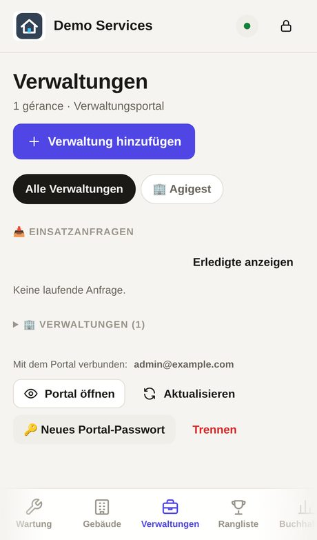
Ein neuer Auftrag lässt den Punkt blinken und erscheint auf der Startseite. Antippen → 📌 Zuweisen einen Arbeiter (⭐ = empfohlener Beruf): Datum, Uhrzeit, Fotos des Problems. Der Arbeiter erhält ihn in seiner App; die Verwaltung verfolgt jeden Schritt im Portal.
Ist der Arbeiter fertig, wird der Auftrag 🟢 abzuschließen: Fotos danach ansehen, dann abschließen. Er bleibt unter 🟡 abzurechnen.
Vor der ersten Rechnung Einstellungen → 🧾 Rechnungsstellung ausfüllen: Firmenname, Adresse, RCS, MwSt., IBAN, Nr. der Niederlassungsgenehmigung.
Wartung → 📝 Angebot → Neues Angebot . Art wählen: Arbeiten oder Wartungsvertrag (Monatspauschale).
Speichern so oft Sie wollen, ohne Unterschrift: das Angebot bleibt 🟡 In Vorbereitung. Sind die Preise eingesetzt, tippt der Direktor auf ✅ Kostenvoranschlag fertig : erst dann erscheinen der Versand an den Kunden (PDF, WhatsApp, E-Mail, Link, Portal) und ✍️ Kunden unterschreiben lassen (Bon pour accord). Noch nicht gesendet? ↩️ Zurück in Vorbereitung .
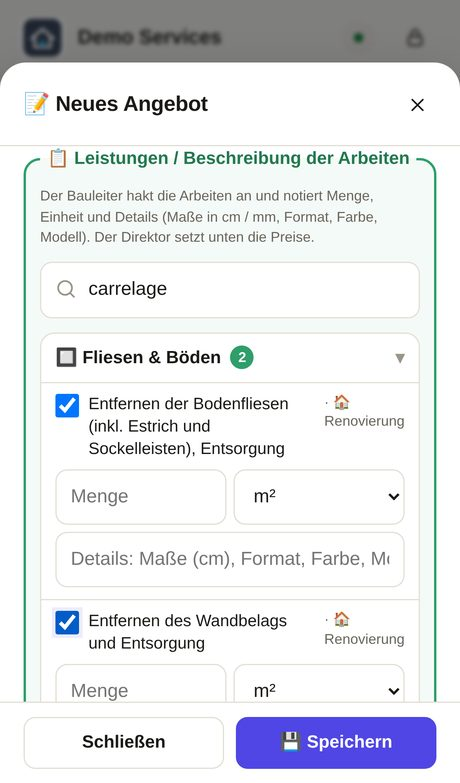
Fotos des Angebots: in einem oder mehreren Durchgängen wählen (sie summieren sich); unter dem Feld erscheint der Name jedes Fotos mit ✕ zum Entfernen, dann Speichern und die Vorschaubilder erscheinen. Höchstens 20.
Angebot senden: an eine Verwaltung mit 📤 Senden an das Verwaltungsportal (sie nimmt an, lehnt ab oder bittet im Portal um Überarbeitung); an Privatkunden oder Firmen mit 🔗 Link / QR-Code : WhatsApp, SMS, E- Mail oder QR zum Scannen. Der Kunde liest, unterschreibt mit dem Finger, und Sie sehen es sofort.
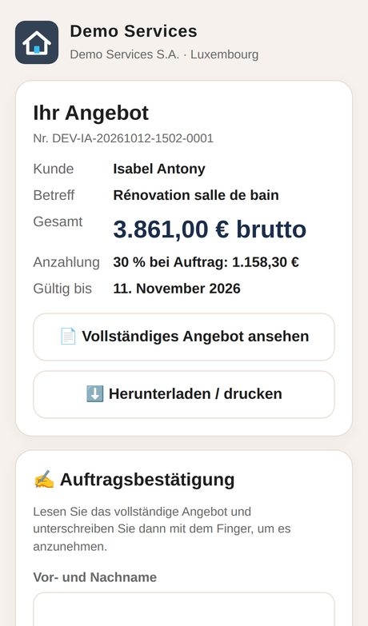
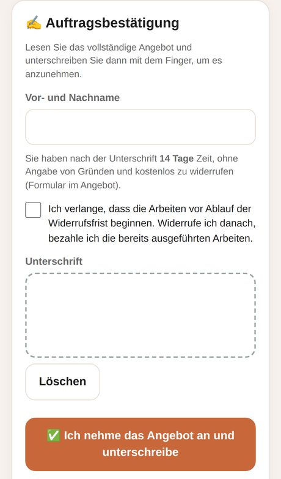
Der Punkt des Angebots: 🟢 wartend · 🟡 läuft bald ab · 🔴 abgelaufen · 🟣 von Privatkunde unterschrieben, 14 Tage Widerruf · ✅ angenommen, Beginn möglich. Eine Überarbeitung erstellt die Version R1, R2… mit demselben Link.
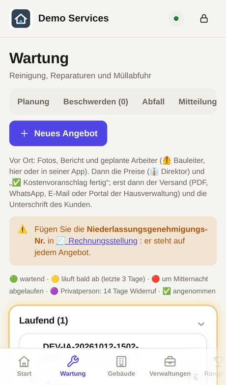
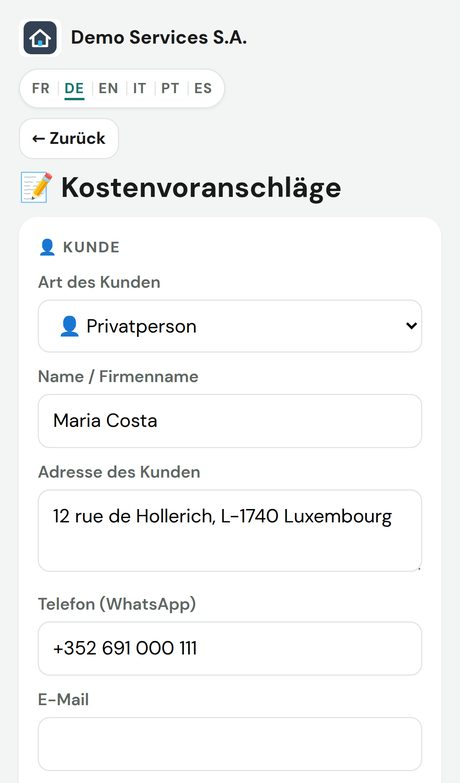
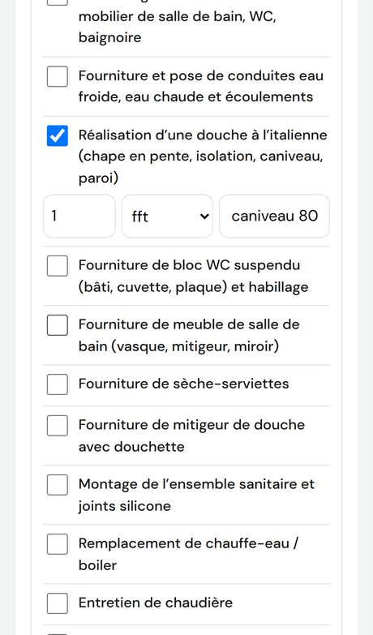
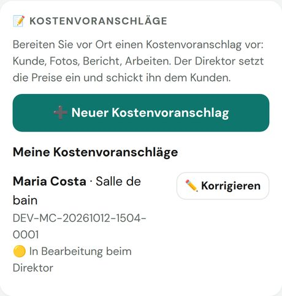
Buchhaltung → 💳 Abonnements : die Tarife der Verwaltungen, die Zahlungen und die im Portal sichtbaren oder ausgeblendeten Angebote. Statistik: angenommene/abgelehnte Angebote, Antwortzeiten, Umsatz.
Wartung → Reiter Team: neben Neuer Arbeiter stehen 📌 Zuweisung (Einsatzanfragen) (Arbeiter wählen, dann die Anfrage) und 📅 Neue Arbeit (neuer Einsatz) (das Formular öffnet sich, „Wer?“ wählen). Dieselben Knöpfe sind im Blatt jedes Arbeiters.
Das Plakat blättert die Fotos mit dem Finger oder den Pfeilen ‹ ›; ein Tippen auf ein Foto öffnet es im Vollbild (Handybreite, begrenzte Höhe).
Einstellungen → 🔒 Ausblenden: Verwaltungen, Gebäude, Hotel oder Immobilienagenturen ankreuzen. Im Menü steht dann „🔒 AUSGEBLENDET“, die Seite öffnet sich nicht mehr. Haken entfernen, um sie zurückzuholen (kein Passwort).
Tasten 💬 WhatsApp · ✉️ E-Mail · 📱 SMS: der Code geht in der Sprache des Gastes raus. Der Code- Verlauf bleibt in der Karte.
Antippen öffnet die Immobilien im Vollbild: Fotos zum Wischen, Preis, Räume und der Kontakt des Maklers (📞 Anrufen · ✉️ E-Mail). Eine gelöschte Immobilie verschwindet überall.
Überall dieselben Farben: 🟠 Einsätze · 🔵 Verwaltungen · 🌊 neue Immobilie · 🟣 Angebote · 🟢 Mieter und Mieten · 🟡 Hotel · 🔴 dringend · Werbung. Am Computer mit der Maus über die Punkte unter Einstellungen fahren; in den Apps unten die kleinen Farbstriche antippen (ℹ️ für die ganze Legende).
Unten 📊 Diagramme: Kennzahlen, Arbeiten nach Art, pro Monat, pro Person, Pünktlichkeit und Kundenbewertungen; 🖨️ Bericht Geschäftsleitung (PDF) druckt sie.
Beim Abschluss einer Arbeit kann der Arbeiter die Menge notieren (z. B. 12 Fenster, 3 Wasserhähne, 40 m²). Sie erscheint im Verlauf des Einsatzes und in den Statistiken.
Rechnungen, Angebote, Berichte und Statistiken: Ihre Marke by Ihre Firma Quittungen und Kautionsbelege bleiben im Namen des Vermieters, mit seinem Stempel. 💳 Abonnements ist ein eigener Menüpunkt.
Im Portal beantragt jede Agentur Einsätze, verfolgt die Arbeiten, beantwortet Angebote und lädt Rechnungen herunter. Adresse: ihre-domain/portail.html — 6 Sprachen, auf Telefon und Computer. Ohne Konto ausprobieren: Voir la démo auf der Website.
Den erhaltenen persönlichen Link (WhatsApp oder E-Mail) öffnen und einmal das Passwort wählen. Danach: E-Mail + Passwort, auf jedem Gerät. Passwort vergessen? 🔑 Passwort vergessen? tippen → Sie erhalten einen neuen Link.
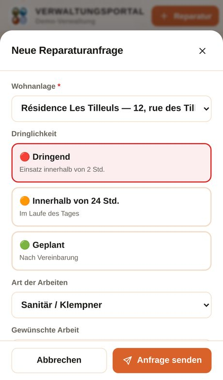
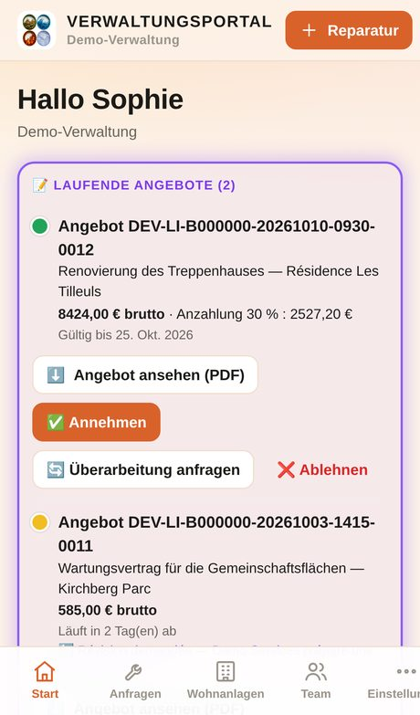
Jeder Auftrag geht voran: Eingegangen → Übernommen → Geplant → In Arbeit → Erledigt, mit dem Namen des Technikers, der Uhrzeit, Fotos vorher/nachher und dem Bericht. Unten im Blatt eine Nachricht schreiben.
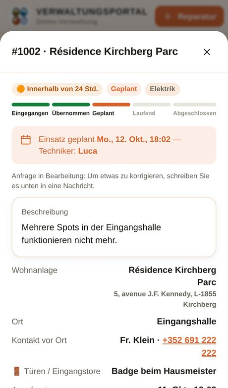
Auf der Startseite der violette Rahmen Laufende Angebote: Angebot ansehen (PDF) , dann tippt der Verantwortliche ✅ Annehmen , 🔄 Überarbeitung anfragen (mit dem, was zu ändern ist) oder ❌ Ablehnen . Der Punkt zeigt die verbleibende Zeit bis zum Ablauf.
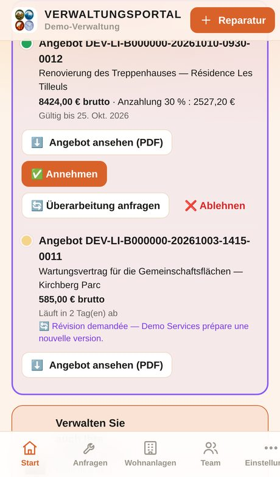
Buchhaltung : die Rechnungen des Monats, bezahlt und offen, PDF zum Herunterladen, Export Excel/CSV. Statistiken : „Ihre Aktivität“, Übernahmezeiten, Zufriedenheit, angenommene Angebote.
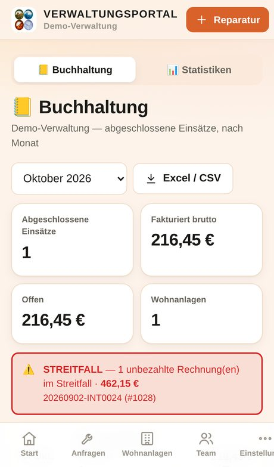
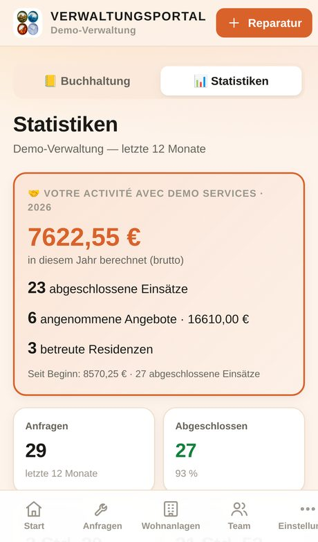
Einstellungen → Meine Firma : Adresse, RCS, MwSt., Bank und das Logo der Agentur. Team : der Verantwortliche fügt seine Kollegen hinzu, jeder mit eigenem Zugang. Benachrichtigungen: Aktivieren auf der Startseite (iPhone: zuerst die App auf dem Home-Bildschirm installieren).
Ein schwerer Notfall? Rufen Sie +352 691 423 943 an — 7 Tage die Woche.
Was sich seit Version 2.116 geändert hat: Verwaltungs-App, Mieter-App und Team-App.
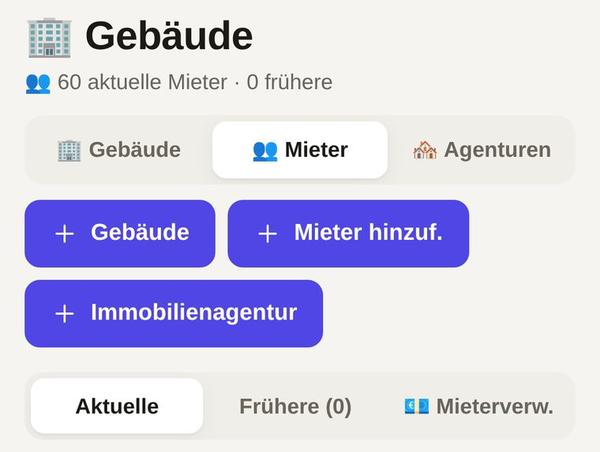
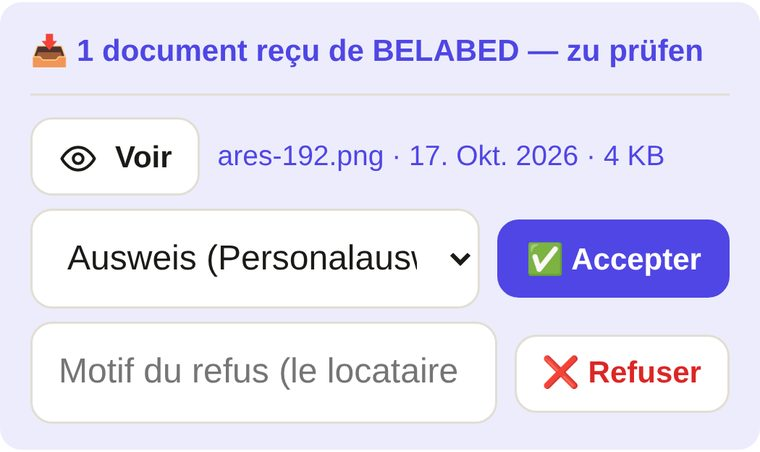
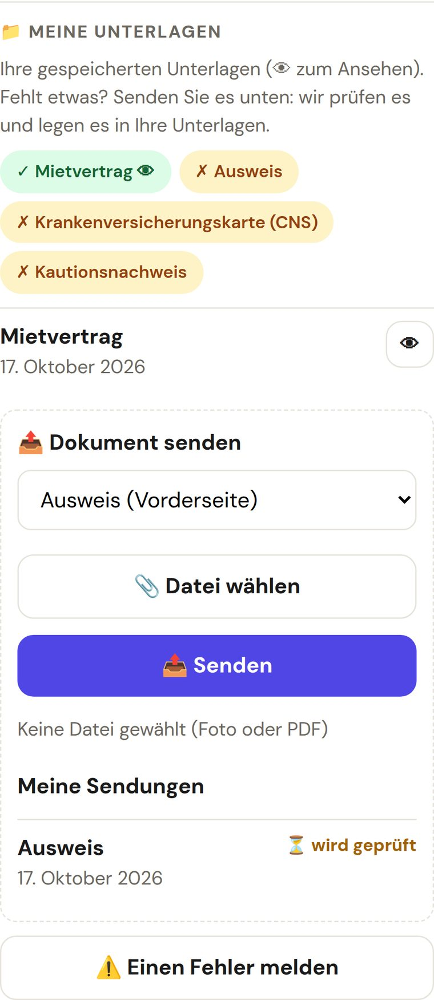
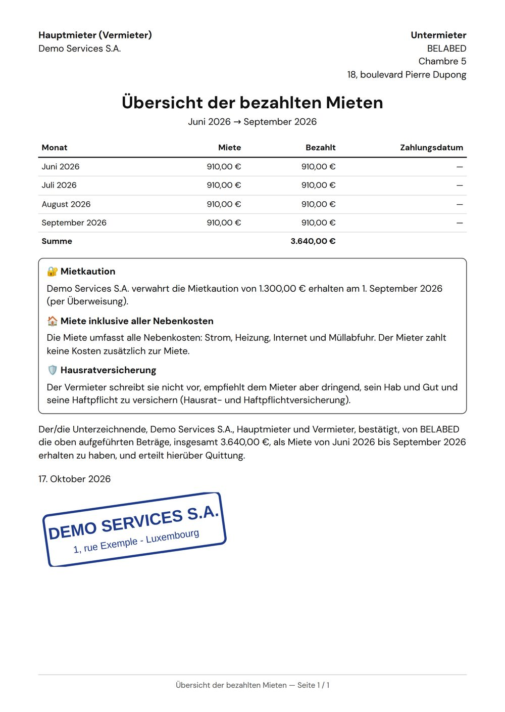
🔐 Sicherheit: Excel-/CSV-Exporte können keine versteckten Formeln mehr enthalten; eine fehlerhafte Nachricht blockiert den Empfang nicht mehr; Sendungen der Mieter sind pro Tag begrenzt.